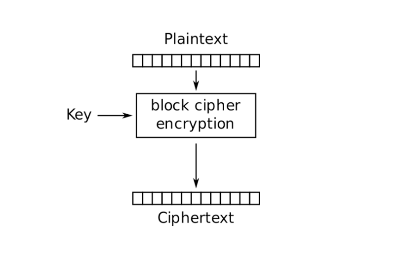
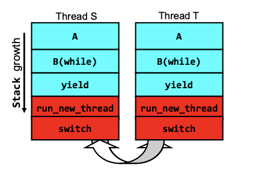
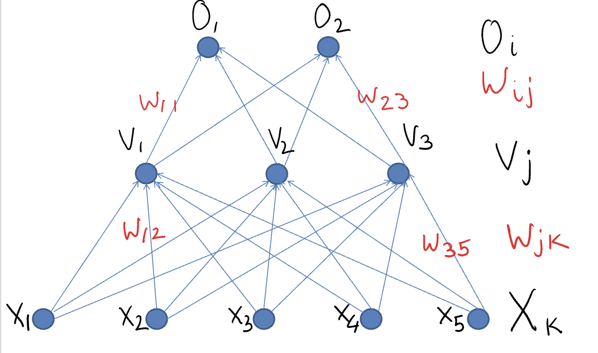
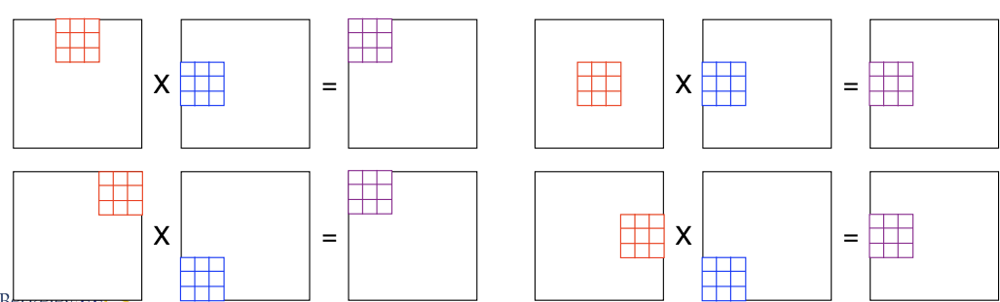
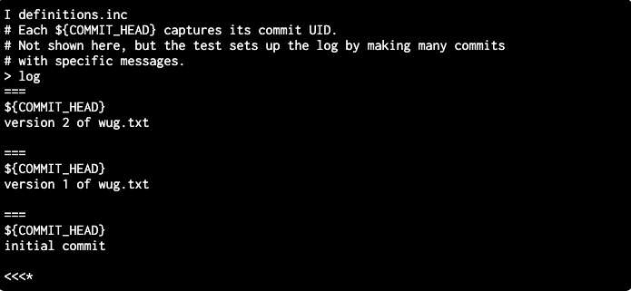
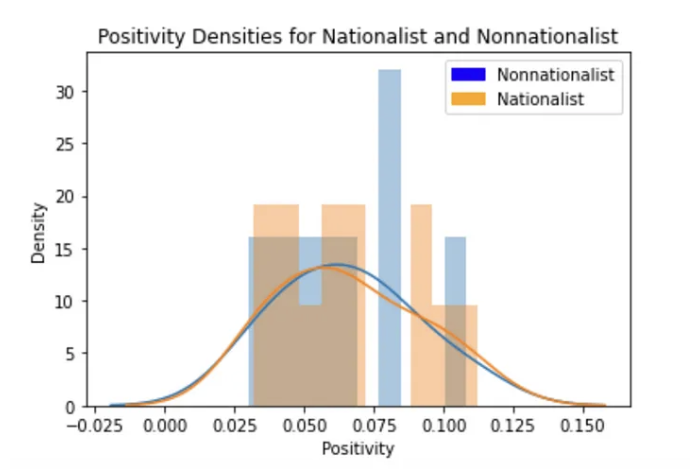

End-to-End Secured Filesystem

Spring 2023
|
Constructed a file system in Golang with secure data sharing features across concurrent users with multiple
devices
Utilized RSA encryption, symmetric-key cryptography, HMACs, digital signatures to uphold IND-CPA
confidentiality
and EU-CPA integrity requirements for file invitations, password management schemes, and select file storage
functionality within a Datastore
|
Pintos Operating System

Spring 2023
|
Designed and implemented an operating system in C with a team.
Supported all fundamental operations such as process executions, forking, system calls, variable data sizes,
priority scheduling, and memory management.
|
Handwritten Digit Classification with Machine Learning

Fall 2022
|
Produced a handwritten digit classification neural network model that successfully classifies whether a digit
from the MNIST dataset is a “3” or a “9” with 98% accuracy.
Developed back-propagation/gradient descent formula for this model from scratch, performing matrix
computations
with Numpy library and visualizing model progress with Matplotlib.
|
Caltask: Web Development Productivity Tool

Spring 2022
|
Created a workload and assignment manager with HTML/CSS and JS w/ team of three.
Added the ability to add, edit, and remove assignments from a task list.
Embedded Google Maps widgets to display directions towards common study areas.
|
Numc: Numpy Optimization

Fall 2021
|
Programmed a matrix calculator in C, supporting features such as adding, multiplying, and exponentiation
functions, achieving speedups of up to 700x.
|
Gitlet: Version Control

Spring 2021
|
Designed and produced a version control system emulating Git, with Java.
Supported commands such as add, commit, merge, checkout with custom data storage classes and utilized data
structures for efficient file tracking. |
Bias Detection via Sentiment Analysis

Fall 2020
|
Analyzed real-world text data in a Python Jupyter Notebook in a team, published Medium article with results:
tinyurl.com/k10iqmb6.
Integrated NLP libraries (NLTK, scikit-learn) to measure political bias in news articles.
|